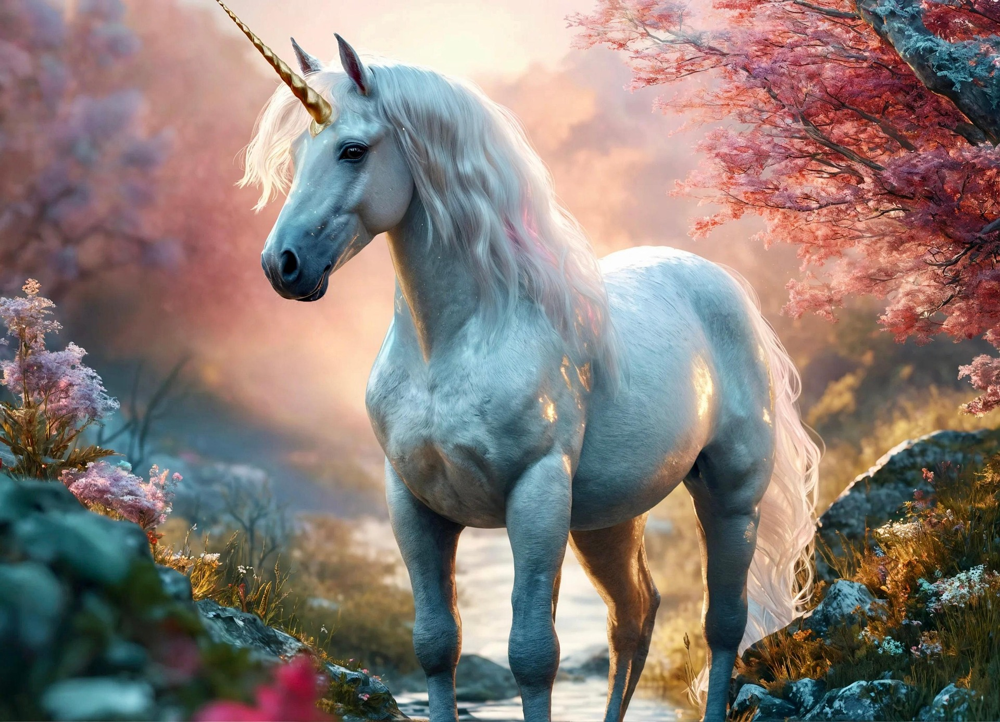
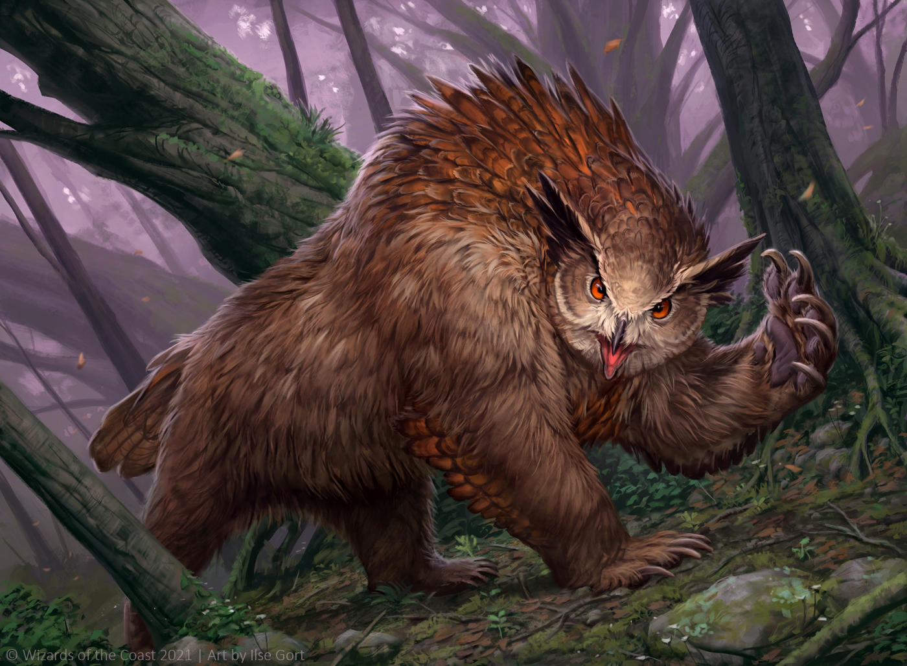

Unicorn
The Majestic Unicorn, the unicorn is a soft creature, often fond of young maidens. Can be known to have magical properties, but only for those they trust!

Owlbear
A ferocious beast, half owl half grizzly bear. Difficult to earn their trust, but once given you have a companion for a lifetime. Excellent guard animal.

Wyvern
The Wyvern might be the most difficult of all! They retain
individuality at all times. Can be standoff-ish, will bite. This
is a lego-rendition as the photographer was recently burned.